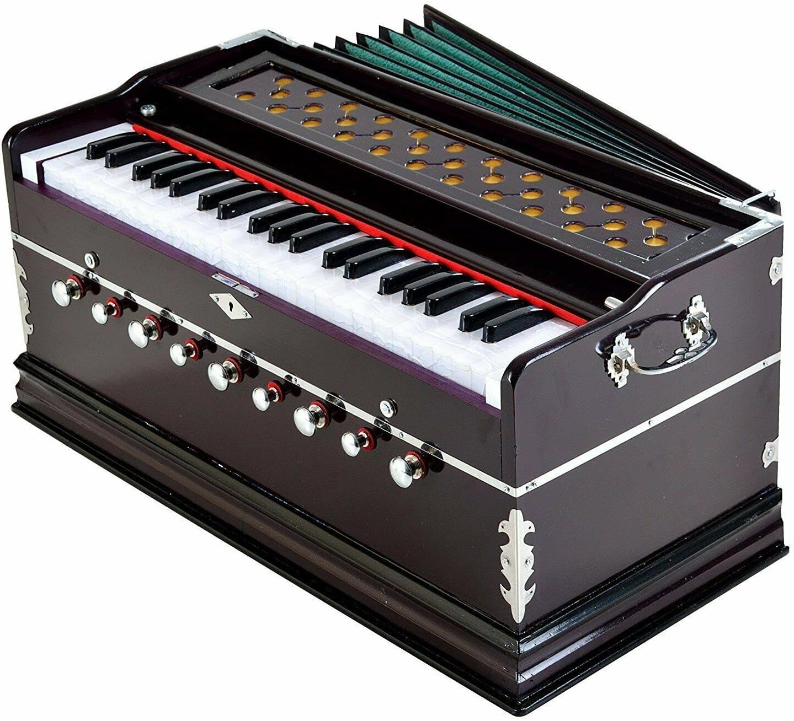
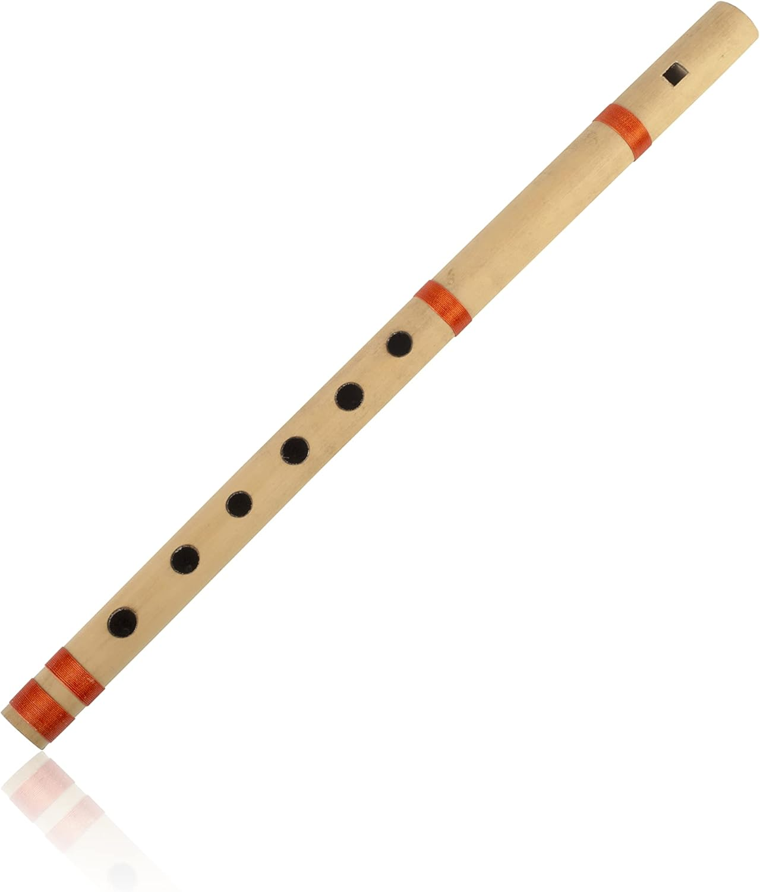
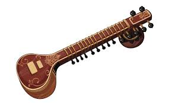
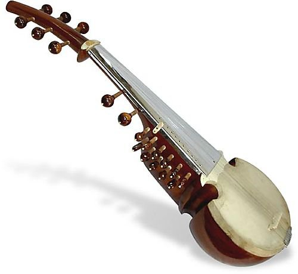
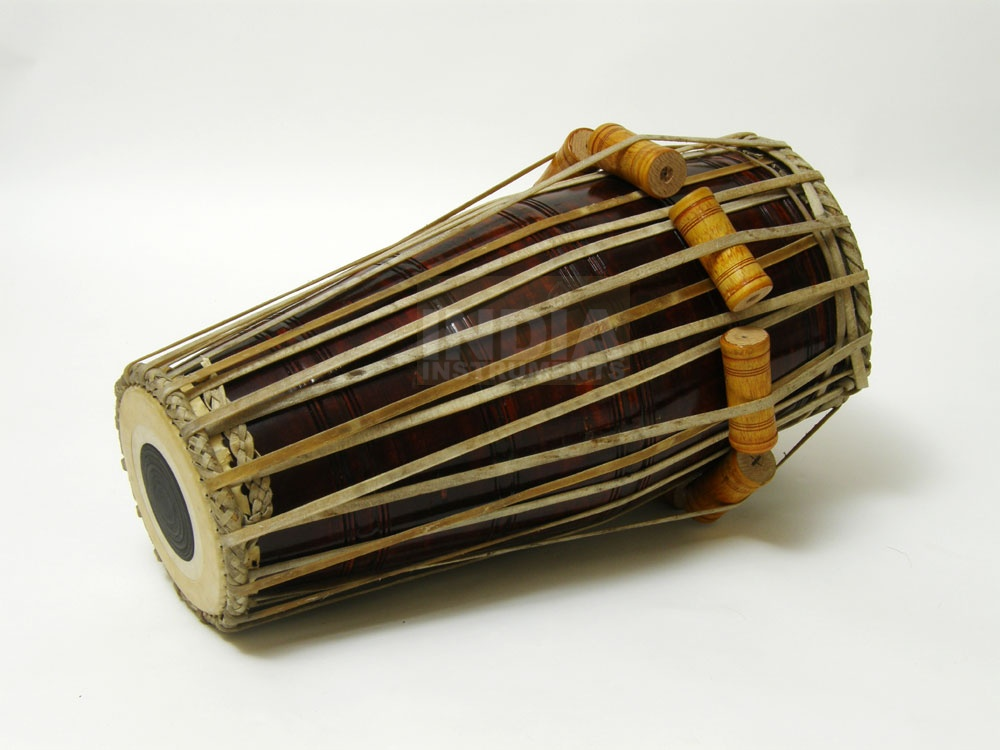
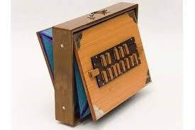

Hindustani Classical Music
Hindustani music is the classical music tradition of North India, one of the two major classical music systems of the Indian subcontinent (the other is Carnatic music of the South). It evolved over many centuries through the interaction of ancient Vedic musical traditions with Persian, Central Asian, and Islamic cultural influences.
Origin and Evolution
- Rooted in the Sama Veda chanting traditions of ancient India.
- major influence during the Delhi Sultanate and Mughal periods through Persian melodic and aesthetic concepts.
- a strong tradition of improvisation, ornamentation, and ragas.
Key Elements
Raga
- A melodic framework or mode.
- A specific set of notes, characteristic phrases, rules, and emotional mood (rasa).
- Each raga is associated with a time of day, season, or emotion.
Tala
- Rhythmic cycle with a fixed number of beats.
- Common talas: Teentaal (16 beats), Ektaal (12), Jhaptaal (10).
Improvisation
- Central to performance.
- Artists develop the raga through sections like Alaap, Jor, Jhala, Bandish, and Taans.
Major Forms / Genres
- Khayal dominant form today; highly improvisational.
- Dhrupad oldest form; meditative, austere.
- semi-classical; expressive and lyrical.
- Tarana, Tappa, Bhajan, Ghazal ighter classical or devotional forms.
Instruments

Harmonium

Flute

Sitar

Sarod

Pakhawaj

Surpetti
Notable Artists
| LIST OF FAMOUS ARTISTS IN HINDUSTANI CLASSICAL MUSIC | ||
| SKILL AREA | NAME | YEARS ACTIVE | VOCALISTS |
| Pandit Bhimsen Joshi | 1922-2011 | |
| Ustad Bade Ghulam Ali Khan | 1902-1968 | |
| Ustad Amir Khan | 1912-1974 | |
| Ustad Rashid Khan | 1968-2024 | |
| INSRUMENTALISTS | ||
| Pandit Ravi Shankar(sitar) | 1920-2012 | |
| Ustad Zakir Hussain (Tabla) | 1951-2024 | |